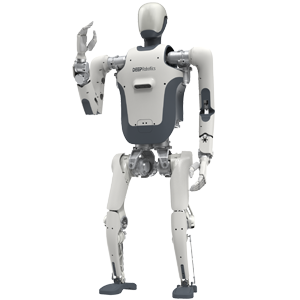

Humanoid · China · Watchlist · #30 R-Score rank
DR01 Robot Profile
Embodied intelligence research, humanoid mobility, perception learning, industrial productivity exploration, and home-environment research
Robot Snapshot
Core commercial and technical signals for DR01.
DR01 facts
- Company
- DEEP Robotics →
- Status
- Humanoid / embodied intelligence explorer
- Use case
- Embodied intelligence research, humanoid mobility, perception learning, industrial productivity exploration, and home-environment research
- Height
- Not disclosed
- Runtime
- Not disclosed
- Official source
- Open official source →
Robologai view
DR01 is tracked as a Humanoid robot for Embodied intelligence research, humanoid mobility, perception learning, industrial productivity exploration, and home-environment research. Robologai scores it by maturity, deployment signal, price clarity, media proof, and official source strength.
67/100 Watchlist
Maturity 3/5
Price clarity 3/5
Commercial 53
Mobility 86
AI signal 86
Watchlist
Readiness Breakdown
How Robologai scores DR01 across market-readiness signals.
Data Quality
Source confidence, pricing clarity, and deployment proof.
Source Notes
DR01 source trail.
Deployment Context
What DR01 signals about the physical AI market.
Compare Next